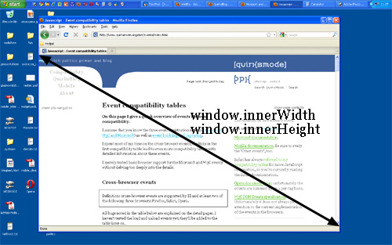
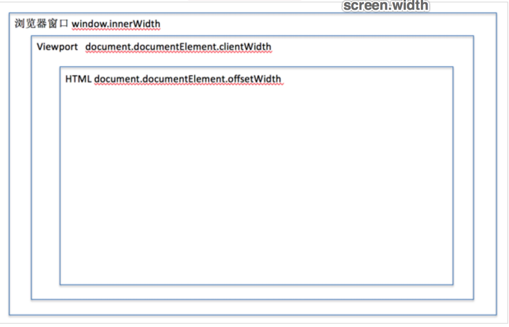

判断浏览器缩放比例的方法
首先，需要知道一些基础知识：
1、css 像素和实际像素
实际像素：设备的固有像素值
css像素：当浏览器不进行缩放时，css像素等同于实际像素
2、四个屏幕宽度属性
screen.width：设备的屏幕宽度，不会改变，比如笔记本的实际像素为1280，得出的结果将一直是1280，单位为px
window.innerWidth：度量的是浏览器窗口的宽度。度量单位是css pixels。
如下图：

document.documentElement.clientWidth:可以理解为视口宽度，和浏览器窗口的宽度（window.innerWidth）相差为垂直滚动条的宽度，此属性的单位为物理px
document.documentElement.offsetWidth：这个属性取得是html的宽度
简单来说，可以这样来看： 当浏览器满屏幕时：screen.width = window.innerWidth
当缩放比例为100%时：window.innerWidth = document.documentElement.clientWidth
当屏幕html元素宽度为100%时：document.documentElement.offsetWidth = document.documentElement.clientWidth 简单来说，如下图： 
所以，判断浏览器缩放比例的方法就很简单了,直接上代码。
var ratio = document.documentElement.clientWidth / window.innerWidth